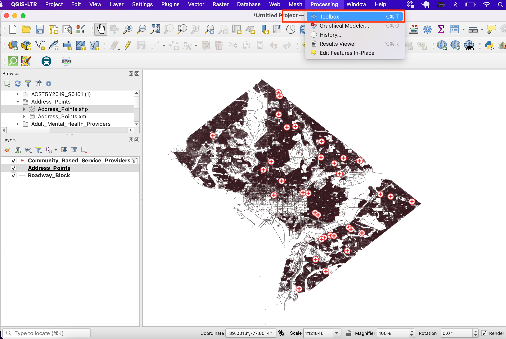

Ujaval Gandhi
Ujaval GandhiIskanje najbližjega objekta z matriko izvor-destinacija (QGIS3)¶
V prejšnji vadnici, Osnove vizualizacije in usmerjanja omrežja (QGIS3), smo se naučili, kako zgraditi omrežje in izračunati najkrajšo pot med dvema točkama. To tehniko lahko uporabimo pri številnih različnih vrstah analiz, ki temeljijo na omrežju. Ena takih aplikacij je izračun matrike izvora in destinacije ali matrike OD. Če imamo množico izvornih točk in drugo množico ciljnih točk, lahko izračunamo najkrajšo pot med vsakim parom izvor-cilj in ugotovimo potovalno razdaljo/čas med njima. Takšna analiza je uporabna za iskanje najbližjega objekta do katere koli točke. Logistično podjetje lahko na primer uporabi to analizo za iskanje najbližjega skladišča svojim strankam, da bi optimiziralo dostavne poti. Tukaj uporabljamo algoritem Distance Matrix iz vtičnika QGIS Network Analysis Toolbox (QNEAT3) za iskanje najbližje zdravstvene ustanove vsakega naslova v mestu.
Opomba
V tej vadnici je prikazano, kako za izračun matrike izvora in destinacije uporabite lastne omrežne podatke. Če nimate lastnih omrežnih podatkov, lahko uporabite ORS Tools Plugin in algoritem za izvedbo podobne analize z uporabo podatkov OpenStreetMap. Če želite izvedeti, kako uporabljati vtičnik ORS Tools, glejte Analiza storitvenih območij z uporabo storitve Openrouteservice (QGIS3).
Pregled naloge¶
Vzamemo dva sloja za Washington DC - enega s točkami, ki predstavljajo naslove, in drugega s točkami, ki predstavljajo ustanove za duševno zdravje - in poiščemo ustanovo z najkrajšo potovalno razdaljo od vsakega naslova.
Druga znanja, ki se jih boste naučili¶
Izbor naključnega vzorca iz točkovnega sloja.
Uporabite virtualne sloje za izvajanje poizvedbe SQL na sloju QGIS.
Pridobivanje podatkov¶
Vlada okrožja Columbia prosto deli na stotine podatkovnih nizov na portalu Open Data Catalog.
Prenesite naslednje podatkovne sloje kot shapefile.
Zaradi priročnosti lahko kopijo zbirk podatkov neposredno prenesete s spodnjih povezav:
Community Based Service Provider.zip
Vir podatkov: [DCOPENDATA]
Nastavitve¶
Obiščite . Izberite Vse Poiščite vtičnik QNEAT3 in ga namestite. Kliknite Close.

Postopek¶
Locate the
Community_Based_Service_Providers.zipfile, expand it and addCommunity_Based_Service_Providers.shpto the canvas. We will select only those centres providing facilities to adults. Right-click on theCommunity_Based_Service_Providers.shplayer and select Filter.

It will open a Query Builder dialog box. Enter the following query in the :guilabel:` Filter Expression` Click Run.
"PROVIDER_T" IN ('Adult','Adult & Child')
Next, locate the
Roadway_Block.zipfile, expand it and add theRoadway_Block.shp. Similarly, locate theAddress_Points.zipfile, expand it and add theAddress_Points.shp. You will see a lot of points around the city. Each point represents a valid address. We will select 1000 points randomly. This technique is called random sampling. Go to .

Poiščite in najdite algoritem .
Izberite
Address_Pointskot Input layer,Number of featurekot Method in vnesite1000v Number/percentage of features. V polju Extracted (random) izberite...in kliknite Save to a file. Zdaj izberite imenik in vnesite ime kotaddress_point_subset.shpter kliknite Run

Opomba
Ker bo algoritem iz danega nabora podatkov pridobil 1000 naključnih točk, lahko za ponovitev vaje, tu uporabljenih točk, prenesete datoteko nabora, ki smo jo dobili med izvajanjem algoritma, tukaj address_point_subset.zip . Po prenosu naložite sloj address_point_subset.shp v QGIS.
A new layer
address_point_subsetwill be added to the Layers panel, you can turn off the visibility ofAddress_Pointsaddress points layer. Let’s rename this layer asorigin_points. Right-click on theaddress_point_subsetlayer and select Rename layer.

Similarly, rename the
Community_Based_Service_Providerlayers representing the health facilities asdestination_points. Naming the layers this way makes it easy to identify them in subsequent processing. Further we will open processing toolbox to create the distance matrix using origin and destination layers.

Poiščite algoritem . Če tega algoritma ne vidite v orodjarni, se prepričajte, da ste namestili vtičnik QNEAT3.

This algorithm helps find the distances along with the network between selected origin and destination layers. Select
Roadway_Blockas the Network layer. Selectorigin_pointsas the From-Points layer andOBJECTIDas the Unique Point ID field. Similarly, setdestination_pointsas the To-Points Layer andOBJECTIDas the Unique Point ID field. Set the Optimization Criterion asShortest Path (distance optimization).

As many streets in the network are one-way, we need to set the Advanced parameters to specify the direction. See Osnove vizualizacije in usmerjanja omrežja (QGIS3) for more details on how these attributes are structured. We also have an option to select geometry style of the generated matrix. We are having a road network with direction information so we can generate matrix by folling the route. Choose
Matrix geometry follows routes. ChooseSUMMARYDIRas the Direction field. EnterOBas the Value for the forward direction,IBas the Value for backward direction, andBDas the Value for the both direction. Set the Topology tolerance as0.0000150. Keep other options to their default values and click Run.

A new table layer called
Output OD Matrixwill be added to the Layers panel. Right-click and select Open Attributes Table. You will see that the table contains 67000 rows. We had 67 origin points and 1000 destination points - so the output contains 67x1000 = 67000 pairs of origins and destination. Thetotal_costcolumn contains distance in meters between each origin point to every destination point.

For this tutorial, we are interested in only the destination point with the shortest distance. We can create a SQL query to pick the destination with the least
total_costamong all destinations. Go to .Search for and locate the .

In Additional input data sources select
...and check the Output OD Matrix and, click OK. Now click the Summation under SQL query. Enter the following query in SQL query dialog box. Entergeometryas the Geometry field and, selectLineStringas the Geometry type. Click Run.
select origin_id, destination_id, min(total_cost) as shortest_distance, geometry from input1 group by origin_id
A new virtual layer
SQL Outputwill be added to the Layers panel. This Layer has the result of our analysis. Nearest service provider for each of the 1000 origin points.

If you want to give feedback or share your experience with this tutorial, please comment below. (requires GitHub account)